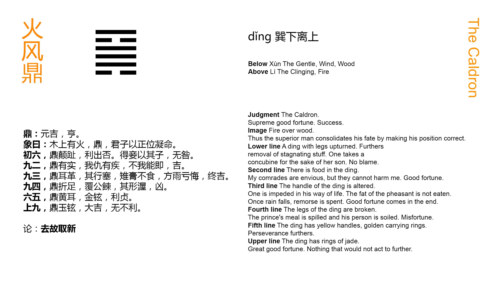

Chinese: 鼑 ䷱ dǐng

Dǐng ䷱ gives the intimation of great progress and success.
1. The first SIX, divided, shows the caldron overthrown and its feet turned up. (But) there will be advantage in its getting rid of what was bad in it. (Or it shows us) the concubine (whose position is improved) by means of her son. There will be no error.
䷱ changing to ䷍
Matching Line 1 in Adjacent Hexagram: ䷰
2. The second NINE, undivided, shows the caldron with the things (to be cooked) in it. (If its subject can say), 'My enemy dislikes me, but he cannot approach me,' there will be good fortune.
䷱ changing to ䷷
Matching Line 2 in Adjacent Hexagram: ䷰
3. The third NINE, undivided, shows the caldron with (the places of) its ears changed. The progress (of its subject) is (thus) stopped. The fat flesh of the pheasant (which is in the caldron) will not be eaten. But the (genial) rain will come, and the grounds for repentance will disappear. There will be good fortune in the end.
䷱ changing to ䷿
Matching Line 3 in Adjacent Hexagram: ䷰
4. The fourth NINE, undivided, shows the caldron with its feet broken; and its contents, designed for the ruler's use, overturned and spilt. Its Subject will be made to blush for shame. There will be evil.
䷱ changing to ䷑
Matching Line 4 in Adjacent Hexagram: ䷰
5. The fifth six, divided, shows the caldron with yellow ears and rings of metal in them. There will be advantage through being firm and correct.
䷱ changing to ䷫
Matching Line 5 in Adjacent Hexagram: ䷰
6. The sixth NINE, undivided, shows the caldron with rings of jade. There will be great good fortune, and all action taken will be in every way advantageous.
䷱ changing to ䷟
Matching Line 6 in Adjacent Hexagram: ䷰
Dǐng ䷱ was originally a pictorial character, representing a caldron with three feet and two ears, used for cooking and preparing food for the table (the mat in old times) and the altar. The picture has disappeared from the character, but it is said that in the hexagram we have an outline from which fancy may construct the vessel. The lower line, divided, represents its feet; lines 2, 3, 4, all undivided, represent the body of it; line 5, divided, represents its two ears; and line 6, undivided, the handle by which it was carried, or suspended from a hook. Appendix VI makes Ting follow Ko in the order of the hexagrams, because there is no changer of the appearance and character of things equal to the furnace and caldron!
Dǐng ䷱ and Jǐng ䷯ (hexagram 48) are the only two hexagrams named from things in ordinary use with men; and they are both descriptive of the government's work of nourishing. There are three hexagrams of which that is the theme, Yí ䷩ (hexagram 27), under which we are told in Appendix I that 'the sages nourished men of worth, by means of them to reach to the myriads of the people.' Jǐng ䷯ treats of the nourishment of the people generally by the government through its agricultural and other methods; Ting treats of the nourishment of men of talents and virtue; and that being understood, it is said, without more ado, that it 'intimates great progress and success.' The Text that follows, however, is more difficult to interpret than that of Jǐng ䷯.
Line 1 is weak, and little or nothing can be expected from its subject. But it has a proper correlate in the strong 4; and the disastrous overthrow, causing the feet to be directed towards 4, is understood to be lucky, as accelerating the co-operation of their two lines! The overturned caldron is thereby emptied of bad stuff that had accumulated in it!! The writer uses another illustration, which comes to the same thing. A concubine is less honourable than a wife, -- like the overthrown caldron. But if she have a son, p. 172 while the proper wife has none, he will be his father's heir, and the mother, the concubine, will share in the honour of his position. Thus the issue of what was so unpromising is good. At least 'there is no mistake.' The above is what is found in the best commentaries on the paragraph. I give it, but am myself dissatisfied with it.
Line 2 is strong. 'The enemy' is the first line, which solicits 1. One, however, is able to resist the solicitation; and the whole paragraph gives a good auspice. The personal pronoun seems to show that the whole was, or was intended to be, understood as an oracular response in divination. This paragraph is rhymed, moreover, as are also 1, 3, and 4.
'In the caldron is good fare,
See my foe with angry glare;
But touch me he does not dare.'
Line 3 is also strong, and in the proper place; and if its correlate were the divided 5, its auspice would be entirely good. But instead of 5, its correlate is the strong 6. The place of the ears at 5 has been changed. Things promise badly. The advance of 3 is stopped. The good meat in the caldron which it symbolises will not be eaten. But 3 keeping firm 5 will by and by seek its society! The yīn and the yáng will mingle, and their union will be followed by genial rain. The issue will he good.
Line 4 is in the place of a great minister, who is charged with the most difficult duties, which no single man can sustain. Then the strength of 4 is weakened by being in an even place, and its correlate is the weak 1 in the lowest place. Its subject is insufficient of himself for his work, and he has no sufficient help; and the result will be evil.
'Paragraph 5,' says the Daily Lecture, 'praises the ruler as condescending to the worthy with his humble virtue.' 'Yellow' has occurred repeatedly as 'a correct colour;' and here 'the yellow ears and strong rings of metal' are intended to intensify our appreciation of the occupant of 5. As the line is divided, a caution is added about being firm and correct.
Line 6 is strong, but the strength is tempered by its being in an even place. It is this which makes the handle to be of jade, which, though very hard, is supposed to have a peculiar and rich softness of its own. The auspice of the line is very good. 'The great minister,' it is said, 'the subject of 6,' performs for the ruler, the subject of 5, in helping his government and nourishing the worthy, the part which the handle does for the caldron.